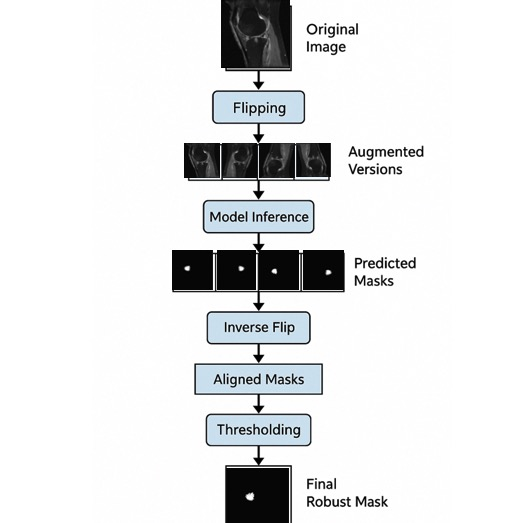

|
Qiong Wang
I earned my Master’s degree in Computer Science from Boston University in 2025, specializing in AI for Life Sciences, particularly AI4Healthcare and AI4Neuroscience 🧠.
Currently, I am a Research Assistant advised by Prof. Donglai Wei, developing foundation models for 3D Neuronal Mitochondria Segmentation in EM Connectomics.
Previously, I worked with Prof. Ming Zhang and Prof. Juan Shan
on medical image analysis.
I received my Bachelor of Arts in Design, then spent over a decade in the tech industry as a designer, PM, engineer, and founder,
launching two startups (one acquired) and building large-scale products at ByteDance.
My industry experience taught me how to create at scale and inspired me to pursue research that is rigorous, impactful, and exciting 🥳.
Email /
CV /
Github
|
|
|
Enhancing Hand Osteoarthritis Classification with Generative AI: A CycleGAN and EfficientNetB7 Approach
Zhen Cao, Juan Shan, Xiaohan Jiang, Qiong Wang, Timothy McAlindon, Jeffrey Driban, Ming Zhang,
The American College of Rheumatology (ACR) Annual Meeting, 2025
🎉Accepted
[Code]
CycleGAN-based augmentation to generate realistic KL3–KL4 hand OA images and enhance EfficientNetB7 classification.
|
|
Enhancing Bone Marrow Lesion Segmentation through Dual-Channel Deep Neural Networks and Test-Time Augmentation
Shihua Qin, Qiong Wang, Juan Shan, Jeffery Driban, Timothy McAlindon, Kevin Wang, Ming Zhang,
IEEE Journal of Biomedical and Health Informatics
The Osteoarthritis Research Society International (OARSI) 2025 Conference
Under Review
[Code]
Improving BML segmentation by adding a bone segmentation channel and applying Test-Time Augmentation (TTA) for more precise and robust results.
|

|
Optimized Deep Learning Method for Automated Segmentation of Bone Marrow Lesions
Shihua Qin, Qiong Wang, Juan Shan, Jeffrey Driban, Timothy McAlindon, Kevin Wang, Ming Zhang,
The Osteoarthritis Research Society International (OARSI) 2025 Conference
🎉Accepted
[Code]
[Paper]
Applied data augmentation, morphological pre-processing, multi-model training (U-net, SwinUNetR, AttentionUnet, U-net++), and Pixel-Wise Voting to enhance BML segmentation accuracy and robustnesss.
|
|
A Novel Machine Learning Model to Predict Knee Replacement
Qiong Wang, Juan Shan, Ming Zhang,
Manuscript in preparation
Developed and evaluated a comprehensive suite of models (Logistic Regression, Decision Tree, Random Forest, SVM, XGBoost, ANN, RNN, CNN, KNN) on MRI-derived features, integrating feature importance analysis, sanity and permutation testing, ensemble strategies, hyperparameter optimization via GridSearchCV, and K-Fold cross-validation to ensure robustness and generalizability.
|

|
Multi-Model Pipeline for 3D Neuronal Mitochondria Segmentation and Proofreading in EM Connectomics
- Contributed to the development of a multi-model segmentation and proofreading pipeline for large-scale 3D electron microscopy (EM) neuroimaging datasets, including mouse brain (P7, P14), cerebellum (Wilson19), kidney, and immune cell (Macrophage) subvolumes.
- Implemented semantic segmentation using nnUNet, and designed an instance segmentation framework combining Segment Anything Model (SAM), watershed, and connected component analysis (cc3d) to delineate neurocellular structures at scale.
- Applied Cellable 3D for proofreading and refinement, ensuring high-fidelity ground truth annotations across complex EM volumes.
- Established GCTransNet baselines on the BetaSeg dataset with structured train/val/test splits, providing reproducible benchmarks for future methodological advances.
- Produced standardized segmentation outputs and curated proofreading-corrected data, forming a foundation for AI-driven connectomics research and advancing large-scale neurocell morphology analysis
|
|
Mitochondria Classification in H01 Connectomics Dataset using 3D ResNets
- Developed a 3D ResNet-based pipeline to proofread mitochondria segmentation within 50 excitatory-inhibitory neuron pairs from the H01 connectomics dataset. Implemented binary classification on 3D subvolumes (mitochondria vs. non-mitochondria) to detect and correct segmentation errors.
- Integrated MedMNIST3D framework with multiple architectures (ResNet18/50, 2.5D/3D/ACS variants) and evaluated models trained via PyTorch, AutoKeras, and AutoSklearn.
- Identified ResNet18-3D as the best-performing model (Test AUC: 0.88, Accuracy: 0.91), significantly enhancing proofreading efficiency and segmentation fidelity.
- This corrected dataset serves as a foundation for downstream biological analyses of mitochondrial morphology and distribution, as well as a planned LLM-assisted visual analytics system for hypothesis generation in neuroscience.
|

|
Enhancing Hand Osteoarthritis Classification with Generative AI: A CycleGAN and EfficientNetB7 Approach
- Developed a CycleGAN-based pipeline to synthesize severe KL3/KL4 OA joint images from mild KL0/KL1 X-rays, addressing class imbalance in OA classification.
Customized CycleGAN training with unpaired domain mappings (KL0→KL3, KL1→KL4), identity loss constraints, and adversarial + cycle-consistency loss to ensure structural fidelity.
Tuned generator/discriminator architectures and tested multiple synthetic-to-real mixing ratios. Integrated synthetic images into EfficientNetB7 training for DIP joint classification,
achieving 6.0% and 3.1% accuracy improvements for KL3 and KL4, respectively, while preserving morphological and textural realism in generated sam
|
|
NLP and Gen AI Modeling with Sentence Transformer and Mistral-7B
- Developed a two-stage QA system consisting of a dense retriever model and a Mistral-7B based generator model.
Fine-tuned the retriever using Sentence Transformer (distilbert-base-uncased) with a custom AutoModel + Pooling architecture,
optimized via Multiple Negatives Ranking Loss on sentence-pair similarity tasks. Built a custom Data Loader using the Input Example for efficient training.
Fine-tuned the generator using Mistral-7B to produce coherent answers from retrieved passages.
Achieved a final evaluation score of 0.38, measured by the average of retriever precision, recall, and generator BLEU score.
|

|
Enhancing BML Segmentation through Dual-Channel Deep Neural Networks and Test-Time Augmentation
- Designed and implemented a Test-Time Augmentation (TTA) pipeline to improve bone marrow lesion (BML) segmentation from IWFS MR images in the OAI dataset.
Evaluated deep learning models including Residual U-Net, SwinUNetR, AttentionUNet, and U-Net++. The TTA pipeline incorporated flipping-based transformations,
inverse recovery, pixel-wise voting, and morphological post-processing, leading to a 69.0% Dice score with the modified U-Net++, outperforming all other models.
|
|
Breast Cancer Detection via Attention-Enhanced ImprovedUNet for Multi-Class Breast Ultrasound Image Segmentation
- Designed a modified U-Net architecture (ImprovedUNet) tailored for multi-class breast ultrasound segmentation using a public dataset of 780 annotated images.
Integrated attention mechanisms within skip connections to enhance lesion boundary focus and suppress background noise.
Employed the AdamW optimizer with weight decay and a cosine annealing learning rate scheduler to improve generalization and convergence.
Applied comprehensive preprocessing and augmentation techniques (resizing, normalization, class-aware sampling) to address class imbalance.
Improved the weighted mean Dice coefficient from 0.53927 to 0.78649, demonstrating the effectiveness of architectural and training enhancements.
|
|
A Novel Machine Learning Model to Predict Knee Replacement Base on Logistic Regression, Decision Tree, Random Forest, SVM, XGBoost, ANN, RNN, and CNN
- Designed and optimized a suite of machine learning models—including Logistic Regression, Decision Tree, Random Forest, SVM, XGBoost, CatBoost,
and KNN—to predict knee replacement (KR) needs in osteoarthritis patients. Engineered MRI-derived features
(e.g., bone marrow lesions, cartilage damage index, and effusion) to improve predictive performance.
Conducted SHAP-based feature importance analysis, sanity checks, and permutation testing,
followed by ensemble learning and hyperparameter tuning with GridSearchCV. Applied K-Fold Cross-Validation to enhance model generalizability,
improving AUC from 65% to 75%.
|
|
Neural Machine Translation with Luong Attention for Sequence Alignment
- Implemented a Seq2Seq architecture with Luong attention to enhance source-target alignment by computing context vectors via dot-product scoring between encoder states and the decoder’s current state.
Integrated attention-weighted representations at each decoding step to capture long-range dependencies and improve translation coherence.
Employed teacher forcing and sequence-level loss optimization, achieving a BLEU score of 30.26, with training and validation losses of 1.96 and 2.80, respectively.
|
|
Binary Classification with CatBoost and Stratified Cross-Validation for Early Outcome Prediction
- Built a robust binary classifier on structured tabular data using CatBoost to predict early outcomes.
Performed comprehensive feature engineering, including statistical selection and domain-informed filtering,
followed by standardization with StandardScaler. Compared multiple models (Logistic Regression, SVM, XGBoost, and CatBoost), with CatBoost achieving the best performance.
Applied Stratified K-Fold Cross-Validation and hyperparameter tuning via RandomizedSearchCV to enhance generalization.
Conducted SHAP analysis to interpret feature contributions and improve model transparency.
Achieved an AUC score of 0.81919, demonstrating strong predictive performance and interpretability.
|
|
iLab Consumables Management Project
- Designed and developed a full-stack system for Harvard University’s biological laboratory to assist researchers in ordering and managing lab consumables, aiming to improve workflow efficiency.
Implemented server-side logic in Java for inventory tracking, order processing, and user account management. Created RESTful APIs and established a PostgreSQL database for data storage and integration.
Built a responsive front-end using React.js with a user-friendly interface and cross-device accessibility.
Ensured data integrity through robust database architecture and implemented backup solutions for disaster recovery.
|
|
{kind=link}